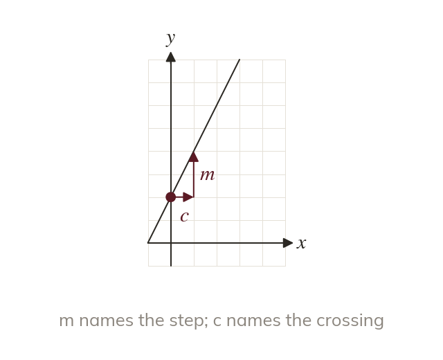

What m and c are
In is the gradient. is the y-intercept, where the line crosses the y-axis.
Any linear equation written in the form has two useful numbers built into it: is the gradient of the line, and is the y-intercept - the value of where the line crosses the y-axis, which is the value of when